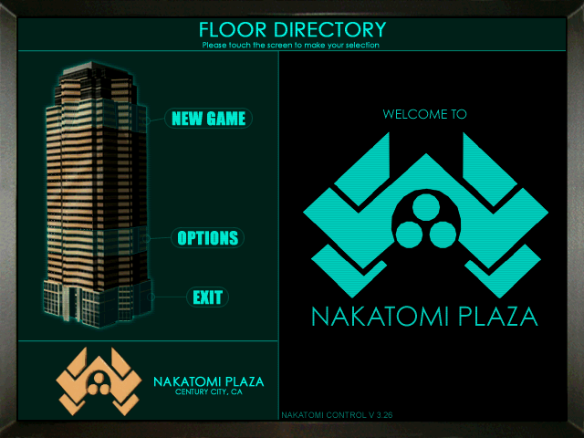
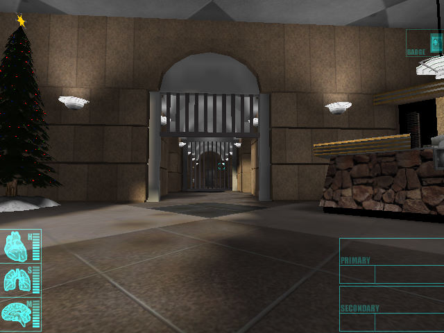

名稱：終極警探／虎膽龍威：大廈驚魂／中富廣場 (Die Hard: Nakatomi Plaza，英文版) 簡介：Piranha 2002年出品的第一人稱射擊遊戲，由Fox代理發行 [待補]。

保護：光碟SecuROM 4.68 備註：VirtualBox無法執行，虛擬機請使用VMware。 檔案：Die_Hard_Nakatomi_Plaza_v1.04_patch.rar = 1.04更新檔 nocd100.rar = 1.00免光碟檔 nocd104.rar = 1.04免光碟檔